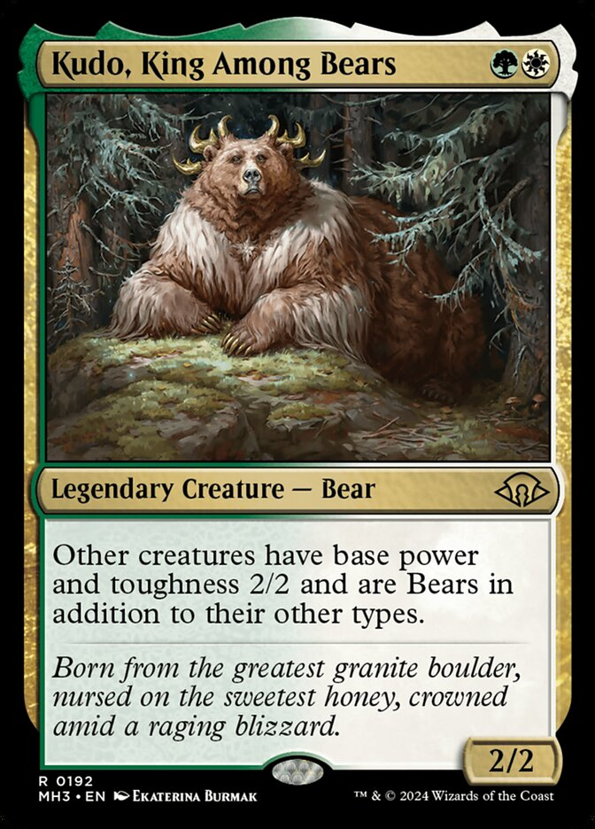
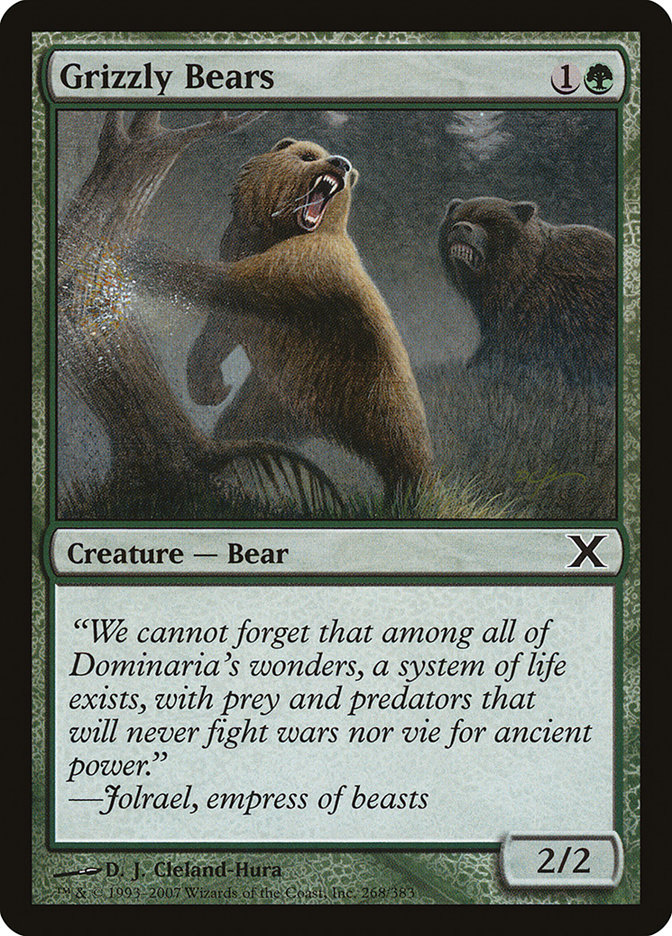
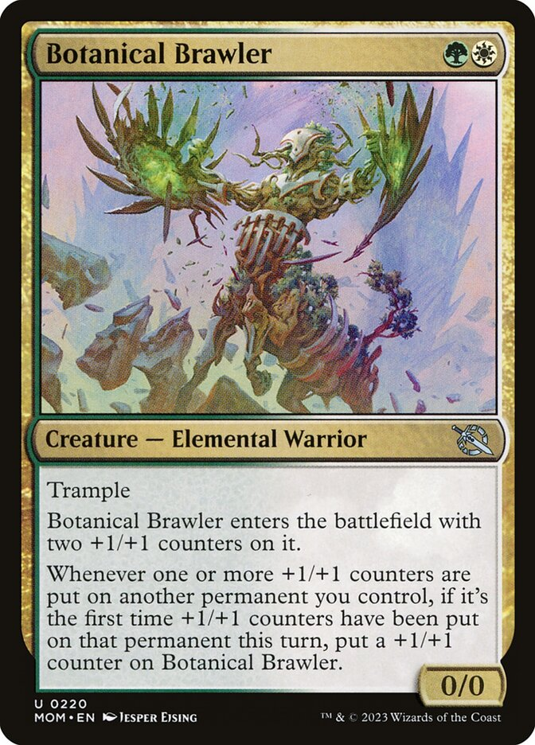

This page is dedicated to me discussing what is probably my favorite deck I have ever created for the Magic: the Gathering Trading Card game. It is my Kudo, King Among Bears commander deck. I don't think I would classify this as a proper deck tech since I don't go into very much detail about how to play it, but I will talk a bit about its strategy. Most of this page is going to require a basic knowlegde of how Magic the Gathering works as well as the commander format. I have provided two videos to help those who have never played the game.

"Kudo, King Among Bears" or "Kudo" as I will refer to them from now on, is Legendary bear creature with 2 toughness and 2 power. They cost one green mana and one white mana. It says "Other creatures have base power and toughness 2/2 and are bears in addition to their other types." 2 things about this are particularly important: this effects all creatures, including your opponents, and it only effects base stats so any additional buffs will still apply, allowing you to get creatures bigger than 2/2. Before kudo came out I was waiting for a card lik this, the only ones before it effected one creature, or got rid of abilities.

The overwhelming majority of Kudo decks are "bear typal" decks. This means that they run a lot of bears and cards that can synergize with bears. They'll even go as far as to run grizzly bears, a terrible card that has almost no synergy with Kudo. The only advantage that kudo brings to a bear typal deck is his ability to turn non-bear creatures into bears. This is only good because it allows you to run some bear synergy cards without actually needing to run many bears, in case their are better creatures (which there are). However, most decks don't do this, despite having a commander that let's them run literally anything, they choose to run every single vanilla 2/2 bear in the game. Nedless to say I don't like this type of kudo deck.

In contrast my strategy revolves around the use of creatures that have base power and toughness 0/0. Usually these creatures enter the battlefeild with some number of +1/+1 counters. Because kudo doesn't reduce stats gained from things like +1/+1 counters, they are often 3/3s and bigger, but priced as though they were 1/1s. This basically means I have "creatures you control get +2/+2" for only 2 mana, which is an amazing deal. The general strategy is to run a bunch of cheap 0/0 creatures that enter with some number of +1/+1 counters, this includes a lot of spells with X in their mana cost like most hydras, as well as cards like botanical brawler (pictured about) which is also synergizes greatly with all the +1/+1 counters I have in the deck.
I use these cheap, and suddenly very overstated creatures, to kill my opponent as fast as I can before they even have a chance to set up their engines. This sort of strategy is normally way more difficult in commander where players have 40 life and there are three of them, but kudo is genuinely able to kill a player extremely fast for commander without factoring in interaction. It also helps that my opponents creatures are also affected so when I am attacking with an army of 5/5s they only have some 2/2s to block with. The deck is also pretty resistant to mana screw because it opperates on so little mana, I have genuinely won or almost one games where I missed four or five land drops, simply because I only need 4 mana to get the deck running.
The deck is not without flaws though. It's incredibly reliant on its commander, if I don't have kudo, then all of my creatures gets exponentially worse. It also tends to flounder quite a bit if my opponent has good blockers or otherwise gets slowed down, then my opponents can very easily just play more signularly powerful cards and beat me that way.
The full decklist is here.